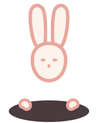

01 / 06
Move
Train the body you actually have.
Every rep, every stride: one upward line.

Health Centric → Elev8
Elevate everything.
Two million genomes, so we can be precise about one.
Where we start
“Elevate your life.”
Health Centric’s current homepage carries one line above everything else. It’s the best thing on the site, and it’s fighting for air against four database statistics and a panel called Endocrinology & Metabolism.
Elev8 isn’t a new idea. It’s the idea you already had, given a name, a face, and somewhere to stand.
The brand problem
Exclusive gets you margin, aspiration, a reason to charge what precision is worth. It also gets you a brand nobody’s mother would click.
Inclusive gets you scale, warmth, a market of a billion people. It also gets you a commodity nobody pays a premium for.
We don’t pick.
Your baseline is yours alone. The wish to rise is everyone’s.
Elev8 is exclusive because it’s n=1. Nobody else on earth has your data, so nobody else can be sold your plan. It’s inclusive because everyone has a baseline, and every baseline is a legitimate place to start. Precision is the luxury. Nobody’s excluded from being themselves.
The character
Look at the “8” in Elev8 and you’ll find it: one unbroken line, looped twice. It’s the same shape as your nervous system in miniature.
El was drawn from that line. When you need her, the loop unwinds, opens a small hole in the page, and she rises up through it, ears first. She’s not arriving from somewhere else. She was already there.
She doesn’t do the work for you, and she won’t lecture you either. She just makes sure that whatever you’re looking at, you don’t have to look at it alone.
The same six panels. A different door.
01 / 06
Train the body you actually have.
Every rep, every stride: one upward line.
02 / 06
Play the long game with real numbers.
A whole, steady state, held over time.
03 / 06
Sleep, stress, and the head between them.
The line stress takes, before you catch it.
04 / 06
Find out what your food is actually doing.
Shaped by what you actually eat.
05 / 06
Get ahead of what runs in the family.
Every point, connected: your family’s pattern.
06 / 06
Skin and hair, decided by chemistry.
One clear read on skin and hair.
Same science, different sentence
Endocrinology & Metabolism Panel: Rs. 25,000
Why your body treats food differently. Metabolism. From ₹25,000.
Genes influencing MODY, T2D/T1D, Insulin sensitivity with exercise
Find out whether exercise actually moves your blood sugar, or whether you need a different lever.
Gene variants influencing production of DHEA, Oxytocin, Melatonin, Cortisol
Four hormones decide how you sleep, stress and recover. Yours don’t behave like anyone else’s.
2 Million: World’s Most Advanced Genomic Bigdata
2 million genomes so we can be precise about one. Yours.
ALWAYS BE HEALTH CENTRIC
Know your baseline. Elevate everything.
The kit
Know your baseline.
Lifted from the four-colour base-call scheme of a DNA sequencing chromatogram, warmed, deepened, made brand-safe. Kalava red carries every primary action. One saturated colour, one job.
A display face confident enough to hold a 96px headline and warm enough to sit at 24px next to a diagnosis. Sport sits beside Cancer Panel on this site. The type has to survive both.
Full construction rules, her four poses, and the mechanic that makes her more than decoration: she’s literally drawn from the “8” in the logo. Plus a separate abstract icon system for the six verticals, so she never has to do double duty as a diagram.
One signature system: things draw in before they appear, El leads every load and every empty state, and everything respects reduced motion by default.
Every rule exists so the tenth person to touch this brand makes the same decision as the first.
What you get from us
Most brands buy strategy from one place, design from another, code from a third, and social from a fourth, and spend a year translating between them. We do all six, so nothing gets lost in the handover.
Positioning, naming, the El character with a full pose sheet, colour and type system, tone of voice, and every collateral you’ll actually use: kit packaging, lab report template, business cards, pitch decks, merch. Delivered as a brand book any agency or freelancer can execute from without calling us.
Every template, home to checkout, built on your existing stack so nothing’s thrown away. CMS your team can publish from. Green Core Web Vitals on mobile. Accessibility to WCAG AA. Non-negotiable in health.
iOS and Android. Onboarding that doesn’t lose people at the kit stage. Reports that translate findings into a plan. Roadmapped to El as an in-app companion.
APIs, auth, sample lifecycle, report generation, payments, admin dashboard. Built for genomic data: encryption, consent management, audit logs, India data residency, a defensible DPDP position. Documented, so you’re never hostage to a vendor. Including us.
Instagram is the brand’s face. YouTube is the credibility engine that converts a ₹25,000 decision. LinkedIn is the B2B pipeline into hospitals, corporates, and sports academies. Strategy, content, motion, community management, and reporting against named KPIs. All three, one voice.
The editorial engine behind everything: pillar strategy, SEO, the Knowledge Centre rebuilt as a real asset, and AI-search optimisation, so Elev8 gets cited when someone asks a chatbot about genetic testing in India. Almost nobody in Indian healthcare is doing this yet.
How we’d run it
Brand strategy, naming lock, El design and pose sheet, full visual system, brand book, core collateral.
Website design and build, backend, CMS, B2B property, launch campaign, social system live.
App design and build, report-translation layer, and El as an in-app companion: the thing that reads your genome back to you in your own language and remembers what you asked last month.
Runs alongside Phases 1 to 3, not after. Instagram and LinkedIn content built in the brand’s own voice from day one, so Elev8 has a warmed-up audience waiting before the site or app ever ships. Content calendars, reels and carousel formats, founder-led LinkedIn posts, community management, and paid amplification testing. El appears here early, in her four poses, well before the full build is live.
Where content stops being a build-up and becomes the engine. Exact scope gets locked once we’re inside Phases 1 to 3. What’s working in Phase 4 tells us what’s worth scaling, rather than guessing at it now.
Phase 3 is where a mascot stops being a logo and starts being a reason to renew a subscription. There’s a two-year window to do this first in India.
Give us the brand and we’ll give you the rest.
Let’s talk02100 · Bengaluru